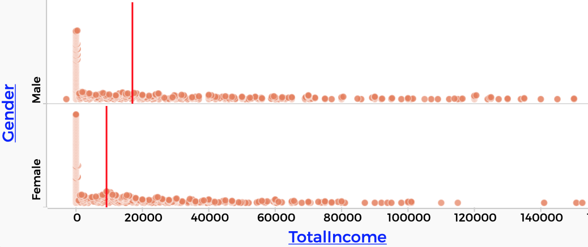

6 A Second Assignment
Think about what we did with the investigation of gender and height. The original graph showed that the males were taller than the females. But that graph was bogus because it didn’t take age into account.
The point is that the simple, straightforward approach was too simple. To get a better story out of the data—a story that more fairly describes what’s really going on—we had to dig deeper.
In this project, you can look again at the 2013 California data. Instead of stopping at the first, simplest conclusion or claim, you will dig deeper and add some nuance to the investigation. (You will also have an option to look at a different data set; stay tuned.)
6.1 How do you know when you’re done?
You have a Google Doc (or whatever format your instructor requires). It contains:
Your name.
A simple claim. Pick one:
- People with more education make more money than people with less education.
- People who get on BART at SFO generally get off at Powell Street.
A graph with the first-look, obvious results.
A description of why that simple approach might not be enough to really explain the data
A description of what you did to further the investigation (“dig deeper”). In this description,
- You have grouped the data by dragging an attribute (or attributes) to the left in the table.
- You have calculated some summary value (e.g., a mean or a sum) for each group by making a new column with a formula.
The results of that deeper investigation (with, e.g., a new graph of the data)
A conclusion: is the story any different now?
Possibly, ideas for additional “dig deeper” activities with this data set, and…
A link to a shared CODAP doc (like last time) so the instructor can see what you did.
Your Google Doc is probably no more than two pages long. Be sure to set permissions so your instructor has edit access.
Where to get the data
Instead of using a “canned” data set, for this assignment you will use a data portal. In CODAP, this appears as a window where you specify what data you want, and then press a button to get it.
-
… BART is a regional transit system in the San Francisco Bay Area. SFO is the San Francisco International Airport. You can read all about the BART data portal in a separate chapter.
-
… You can get data on education, income, race, gender, etc., and choose how many cases. Go to the options tab to choose what attributes you want.
ACS stands for “American Community Survey,” which is run by the Census Bureau, and collects data between the decennial Census years. The portal for the Census data looks like this:

Elaborations
Google Doc. If you do not know yet how to make a Google Doc, it’s time you learned. If you need to know more, ask a friend or Google it.
Including a Graph. How do you get the graph from CODAP into your file? At the moment (early 2020), you can’t just copy and paste. Here are two alternatives:
- Click the camera palette in the graph and…
- choose Export Image (you can also Open in Draw Tool).
- choose Local File and pick where you want to save the file.
- after saving the file, import it (it’s in .png format) or do a copy/paste into your Doc.
- Use a screen-capture utility to get an image of your graph, and then paste it into your doc.
Pro tip: Be conscious of space. Noobs often just paste huge graphs into their documents and leave them that way. After pasting, shrink the graph so that it’s a reasonable size. What’s reasonable? When you print it out, it should still be easy to read any text. For a typical CODAP graph, that’s no bigger than about 1/6 of a page. If you know how to wrap text around a graphic, sometimes that can look very professional.
6.2 Example: Gender and Income
Here’s an example of the kind of thing we have in mind:
Suppose we were interested in gender and income. The simple approach is to (duh) plot gender and income. The graph alone looks vaguely like the men get more, but if you put the median on the graph, and rescale it, it’s really obvious:

TotalIncome split by Gender, with lines showing median income for each group.This is what we probably expect: men earn more than women. If we look at median values, men earn $17,000, versus $9,200 for the women. But does that tell the whole story? How could we dig deeper? (…as required in the assignment)
We might ask:
- Is it possible that the incomes really are equal, but we’re looking at it wrong?
- Can we be more nuanced? For example, is there some other factor that affects income?
Looking at the graph, see the large number of people who seem to earn zero—or close to it? That spike at zero is taller for women. Maybe that’s because more women work in the home, and are not paid.
So maybe the incomes for people with jobs are equal between men and women, but because more women do not get paid, their median income is lower overall. This reasoning is an example of exploring whether we’re looking at it wrong, and that there is another factor—employment—that affects income. That is, it’s not just gender.
To test this idea, let’s just look at people with jobs. It turns out that we can get data for an attribute (a column) called EmplStatus for “employment status.”
That means you could filter to focus your investigation on people with jobs. That way, you can explore whether men with jobs generally earn more than women with jobs.
Try that in the live illustration below. The “employment status” attribute is at the far right of the table.
You should find that the men still earn more. If you hide everyone but those that are “Civilian employed,” the men earn $45,000 to the women’s $30,000. So the fact that more women do unpaid work does not completely explain the difference in income.
Notice that this will only work if you have downloaded EmplStatus data. If you get partway through your investigation and realize that you wish you had downloaded something else, or something more, you can’t add additional columns to the cases you already have. But remember: starting over is free. Just go back and get fresh data with the attributes you want.
6.3 Don’t forget to drag left!
We’ve seen what we mean by “dig deeper,” but don’t forget to read the assignment. It also expects you to do that “drag left” grouping move. In this case, that would be dragging Gender left to make groups of males and females. Then you would make a new column (maybe called medInc) in which you would calculate the median income for each gender.
Look back at the section where we made groups by age if you don’t remember how.
Then think about how you can use grouping to help with your “dig deeper” work.
When you drag Gender to the axis of a graph, CODAP helps you do a grouping data move. Then, when you put the median on the graph, that’s summarizing. For this assignment, though, we want you to make those moves explicitly—grouping by dragging left, summarizing in a new column with a formula— because (a) it’s good practice and (b) it’s more flexible.
6.4 “Digging Deeper” and skepticism
“Digging deeper” means adding nuance to your investigation, bringing out important trends and effects that might not be obvious at first. It’s like fleshing out a sketch and making it more detailed.
But it’s also about being skeptical. When you make an initial, obvious graph, and draw some conclusion or make some claim, a skeptic steps back and wonders whether that’s really correct. Is there some other explanation for what you are seeing?
You can think of this as a “yes, but” attitude. It’s also the role of a “devil’s advocate”—someone whose job is to tear down an argument. If the devil’s advocate succeeds, that’s good, because without that skepticism, the conclusion would have been wrong. And if the devil’s advocate fails, that’s good too, because by passing that test, the original conclusion is stronger.
Skepticism is not always confrontational, however. You can also think of it as a “yes, and” attitude: the claim may be right as far as it goes, but there may be other important considerations.
In the case of gender and height, we saw that, indeed, males were generally taller than females, but only after about age 13.
6.5 Commentary
Your job as a student is to try really hard to understand the bit about dragging left to make groups, and making new columns with calculations. If you’re feeling challenged enough already, pick the claim about education and income.
Here’s some advice for how to explore and get comfortable:
- Make a graph, any graph. Try different groupings: drag one attribute left, and see what happens. Then drag the first one back and then try a different one.
- Try making a group (like for education) and adding an additional attribute (like gender) to the left. See what groups exist now.
- Select groups on the left by clicking in that row. See what gets selected in the graph.
- When you make a column and give it a formula, try different formulas and see what happens.
- Remember that the name of your “formula” column is just a name. It’s not the formula. So if the column is named
MeanIncomeand the formula ismedian(income)you will get the median. (You should change the name!) - Change what’s on the graph. Make more graphs! Try graphs with a calculated attribute on an axis.
Oh and:
- Try dragging
TotalIncometo the left and see why that’s a terrible idea.
If you just mess around for a while like that, you will probably see something that addresses your claim. You may even have created something that will be perfect for your “dig deeper” section.
Two last key pieces of advice:
- When you make a grouping or summarizing move, stop for a moment and be sure you understand what changed. What does the organization of the table mean now? What are the groups? How did the numbers change? What does this one particular number mean?
- Don’t beat yourself up if you still feel a bit “awash.” This is surprisingly complicated, especially if you have more than one attribute on the left. It takes time. You will get it.
Questions and Claims
In many school statistics (or science) projects, you begin by posing a “research question.” In this case, the question might be, “who earns more—women or men?” It will come as no surprise that the answer is “men.” That’s what we have heard about our society today (or in 2013, when the data were taken). So “who earns more” might seem to be a silly question.
Instead of a question, sometimes it makes more sense to make a “claim.” This is a statement about what may be true, that you are going to investigate. Our claim might be, “men earn more that women.”
For this assignment, we gave you a claim, so you don’t have to worry about making one up. But think about other claims you might make about your data (after all, in the next assignment you get to pick your claim), or how your claim might change as you dig deeper and add nuance to your analysis.
In stating your claim, you might also want to say why you think your claim is true. It’s great to have a reason for your claim, but be careful: In most cases for this unit, you won’t have data that will tell you anything about the reasons behind some effect.
For example, you might say that you believe people with more education will earn more because they are qualified for higher-paying jobs. Your data can tell you whether they earn more—we have data about education level and income— but we don’t have any data about the educational requirements of the jobs they have.
It’s fine to include reasons if you have them, but keep any claim about your data separate from the reasons just as we did above. Here’s how to do it wrong:
I claim that people with more education are better-qualified for high-paying jobs, and as a result they earn more.
See how that’s different? You can’t make a graph about job qualifications. Keep it separate, even if the separator is just the word “because.”